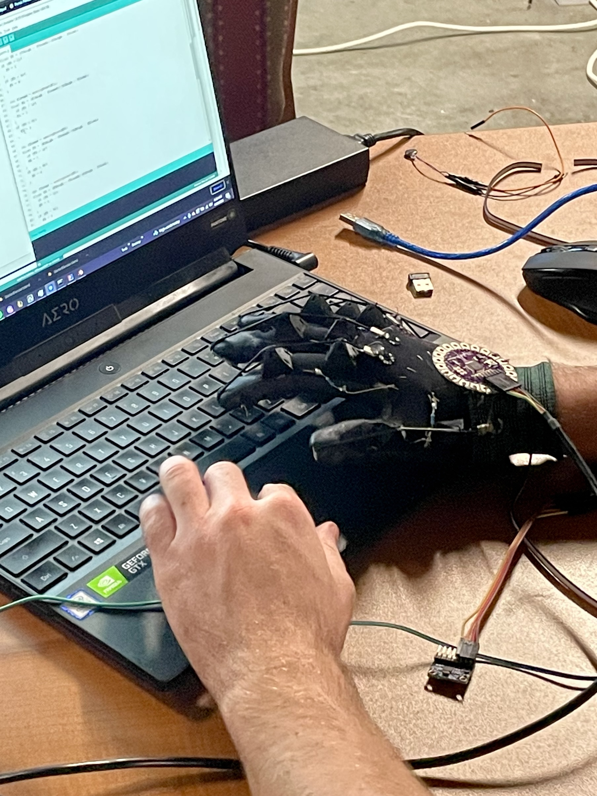
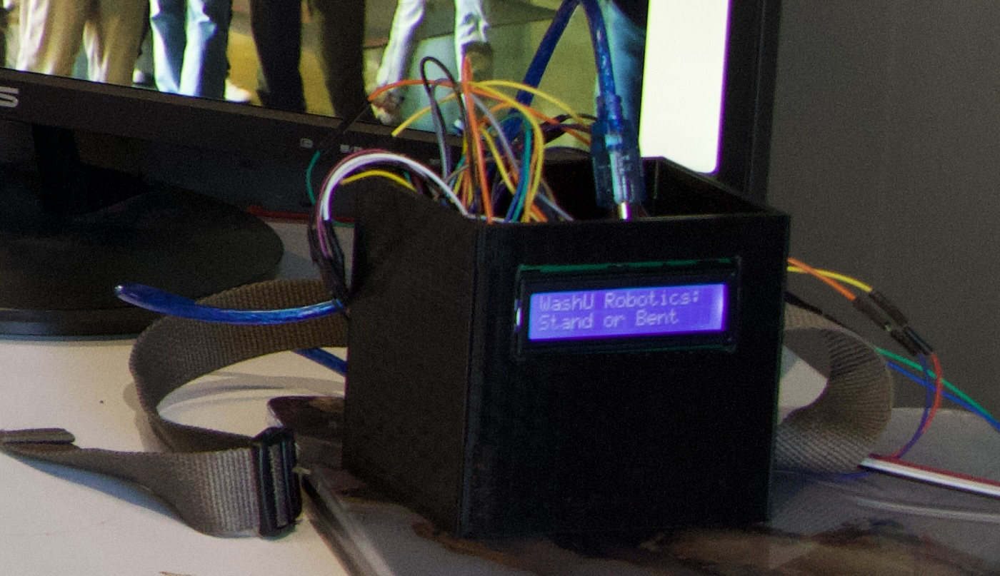
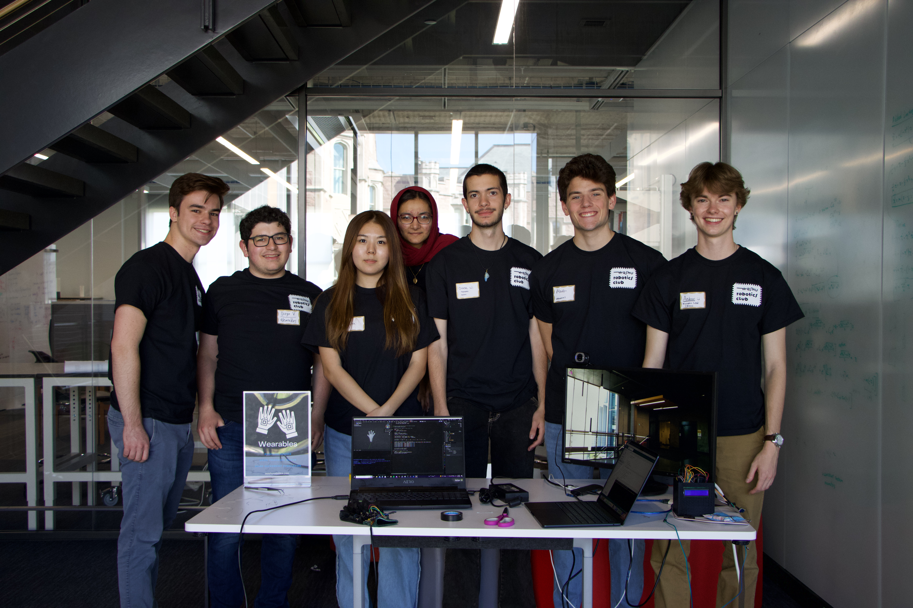

Wearables
The first projects I developed for WashU Robotics were a collection of different wearable electronics. The introductory project I completed with my team was a simple hand tracking script that we combined with small coin ERM vibration motors to create a wearable that vibrated your fingertips when they reached key targets within the camera field. Using iterative design principles, we took the glove concept and expanded upon the vibration motors into a sensor suite glove. This glove contained stretch sensors for finger position and an IMU for hand orientation. Coupled with existing vibration motors on each finger, the glove could be paired with a VR system being developed by another group. Using the sensor + feedback system, a user could replace a plastic handheld with a fitted glove. Each finger had a stretch sensor attached over the joints, and when each finger is closed the resistance value of the material changes and would indicate to the modeling program the state -- open or closed. We also created a small posture sensing device as a proof of concept. We had purchased small flexible sensors that could measure a bend, so we thought a small, belt-worn device that could detect if your back hinged forward could be a useful application.


